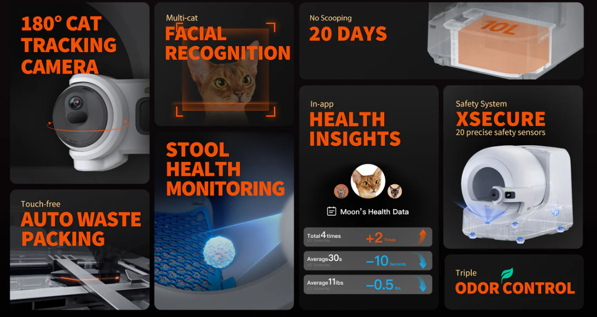

An AI litter box that watches your cat poop.

We’ve gone from “please scoop my litter box” to “please analyze my cat’s bathroom behavior and tell me what it means.” Introducing the Purobot Ultra from PETKIT — an AI-powered automatic cat litter box that not only cleans itself, but also watches every visit with a swiveling camera and keeps an eye on your cat’s health as it happens. It’s like a FitBit and a security camera merged with a trash compactor, and then taught to care deeply about your cat’s digestive output.
This thing does more than just spin the litter bowl and hide the mess. The AI camera rotates up to 180 degrees and records every visit so you can view clips or images in the PETKIT app. It uses facial recognition to identify individual cats and automatically captures photos of stool and clumps after each cleaning cycle. Then it analyzes things like color, consistency, and clump size for signs of constipation, diarrhea, or urinary issues — giving you early disease pre-screening indicators to share with your vet. You can check those captures against a health chart in the timeline, so every poop comes with context rather than mystery.
The part that really pushes this over the line is the facial recognition. The Purobot Ultra can identify individual cats in a multi-cat household and track their bathroom habits separately, which means the litter box now knows who did what. No more guessing which cat is responsible for the mystery clump — the app will tell you, with receipts. Each cat gets its own timeline, complete with visit history, stool images, and behavior trends. I do wonder, though, how well this works if you have multiple cats that all look very similar. It’s surveillance, but make it feline. Somewhere between helpful and deeply unnecessary, your litter box has officially become the most observant object in your home — and it is paying very close attention.